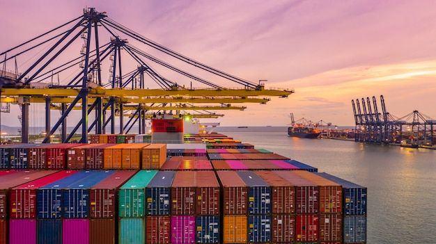

ARALIN 6: KALAKALANG PANLABAS
- Tumutukoy sa palitan ng produkto at serbisyo sa pagitan ng mga bansa. Ito ay nagaganap sapagkat walang bansa ang maaaring makatugon sa lahat ng kanyang pangangailangan ng walang tulong mula sa ibang bansa.
- Bilateral: 2 bansa (hal. U.S at PH)
- Bloc: Organisasyon at 1 bansa (hal. APEC at PH)
- Eksport/Pagluluwas - Pagpapadala ng mga produkto at serbisyo sa ibang bansa.
- Import/Pag-aangkat - Pagbili ng kalakal mula sa ibang bansa.
DAHILAN NG KALAKALANG PANLABAS
PAGKAKAIBA SA TEKNOLOHIYA
Ang bansa ay maaaring magkaiba sa lebel ng teknolohiya kaya’t ang mga ito’y nakikipagpalitan sa isa’t isa upang matamasa ang bunga nito.
PAGKAKAIBA SA PINAGKUKUNANG YAMAN
Ang mga bansang salat sa likas-yaman gaya ng Japan & Korea ay napipilitang mag-angkat ng produkto samantalang malaking kita ang dala ng kalakalang panlabas sa mga bansang mayroong malawak na pagkukunang-yaman.
PAGKAKAIBA SA PANLASA
Gawang imported & ang paniniwala na mas maganda ang kalidad nito kaysa sa gawang Pilipino.
PAGKAKAIBA SA HALAGA NG PRODUKSYON
Ang mga kompanya madalas ay pipili ng bansa kung saan mura ang labor, halaga ng mga salik, at kabuuang presyo ng produksiyon.
PATAKARANG NAKAKAAAPEKTO SA KALAKALANG PANLABAS
TARIPA/TARIFF
- Buwis sa mga produktong inaangkat. Maaring ipinipataw ito upang makalikom ng karagdagang pondo ang gobyerno ngunit kadalasan, naka-pagpapataas ito ng presyo at nakapagpababa ng benta ng inaangkat ng produkto.
- Nagpapataw ng mataas na taripa ang gobyerno upang mapigil ang pagpasok ng dayuhang produktong kalaban ng lokal na produkto.
KOTA
- Maaring limitahan ang pagpasok ng mga kalabang produkto.
SUBSIDY/SABSIDIYA
- Ito ang tulong na ibinibigay ng gobyerno upang bumaba ang halaga ng produksyon ng mga lokal na produkto.
BATAYAN NG KALAKALANG PANLABAS
ABSOLUTE ADVANTAGE
Ang isang bansa ay masasabing may ganito sa pagprodyus sa isang kalakal kung nakakalikha ito ng mas maraming bilang ng produkto gamit ang mas kaunting salik ng produksyon kumpara sa ibang bansa.
MAS MARAMING NALILIKHA SA MAS KAKAUNTING KAGAMITAN = ABSOLUTE O GANAP NA KALAMANGAN.
COMPARATIVE ADVANTAGE
Ang isang bansa ay masasabing may ganito kung ito’y magkakaroon ng espesyalisasyon sa paglikha ng kalakal.
MAS MABISA AT EPISYENTENG PAGGAWA O HINDI KAYA AY ESPESIYALISASIYON = KUMPARATIBANG KALAMANGAN.
BALANCE OF TRADE (BOT)
- Tumutukoy sa kalagayan ng kabayaran ng pagluluwas & kabayaran sa pag- aangkat.
- mayroong trade deficit kung mas mataas ang import sa export.
- trade surplus naman kung mas mataas ang export sa import.
KABUTIHAN NG PAKIKIPAGKALAKALAN
- Mas maraming produkto ang mapagpipilian sa pamilihan.
- Napapataas nito ang kalidad ng mga produkto na mabibili sa pamilihan.
- Nagkakaroon ng pagkakaunawaan ang mga mamamayan ng bansang nakikipagkalakalan.
- Lumalawak ang pamilihan ng mga produkto sa bansa.
DI-KABUTIHAN NG PAKIKIPAGKALAKALAN
- Nagiging palaasa ang mga mamamayan sa produktong imported.
- Hindi nalilinang ang pagkamalikhain ng mga mamamayan dahil umaasa na lamang sila sa mga produktong gawa sa ibang bansa.
- Pagkawala ng sariling pagkakakilanlan bunga ng pagpasok ng dayuhang kultura sa lipunan.
ASSOCIATION OF SOUTHEAST ASIAN NATIONS (ASEAN)
- Itinatag noong Agosto 8, 1967; ang samahang ito’y naglalayong paunlarin ang ugnayan ng mga bansa sa Timog Silangang Asya.
- Layunin ng ASEAN:
- Maging ganap ang pagnanais na ito’y nagkaroon ng kasunduang tinawag na ASEAN Free Trade Area (AFTA) na nilagdaan noong Enero 28, 1992 sa Singapore.
- Ito’y nakabatay sa konsepto ng CEPT.
- Common Effective Preferential Tariff (CEPT): programang nagsusulong ng pag-aalis ng taripa & quota upang maging ganap ang pagdaloy ng produkto sa mga bansang kasapi ng ASEAN.
WORLD TRADE ORGANIZATION
- Pormal na pinasinayaan at nabuo noong Enero 1, 1995.
- Ito’y kinikilala bilang samahang namamahala sa pandaigdigang patakaran ng sistemang kalakalan o global trading system sa pagitan ng mga kasaping estado o member states.
- Sa kasalukuyan, ito ay binubuo ng 160 bansang kasapi.
- Layunin ng WTO:
- Pagsusulong ng isang maayos & malayang kalakalan sa pamamagitan ng pagpapababa sa mga hadlang sa kalakalan o trade barriers.
- Pagkakaloob ng mga plataporma para sa negosasyon & nakahandang magbigay tulong-teknikal & pagsasanay para sa mga papaunlad na bansa o developing countries.
ASIA-PACIFIC ECONOMIC COUNCIL (APEC)
- Itinatag noong Nobyembre 1989 & ang punong himpilan nito ay matatagpuan sa Singapore.
- Ito’y isang samahang may layuning isulong ang kaunlarang pang- ekonomiya & katiwasayan sa rehiyong Asia-Pacific kaugnay na rin ng pagpapalakas sa mga bansa & pamayanan nito.
- Layunin ng APEC:
- Liberalisasyon ng pakikipagkalakalan at pamumuhunan.
- Pagpapabilis & pagpapadali ng pagnenegosyo.
- Pagtutulungang pang-ekonomiya at teknikal.
PROGRAMANG NAGTATAGUYOD SA KALAKALANG PANLABAS
- Liberalisasyon sa Sektor ng Pagbabangko (R.A 7721)
- Foreign Trade Services Corps (FTSC)
- Trade and Industry Information Center (TIIC)
- Center for Industrial Competitiveness
KARAGDAGANG IMPORMASYON
- Liberalisasyon: pagtanggal ng kota at taripa sa pakikipagkalakalan.
- Deregulasyon: pagtanggal ng pakikialam ng pamahalaan sa panlabas na kalakalan.
- Dolyar: common currency sa pandaigdigang kalakalan.
- Pribatisasyon: pagbebenta ng pag-aari ng gobyerno sa mga pribadong kompanya.
- Balance of Payment: pandaigdigang batayan o sukatan para sa mga gawaing pang- ekonomiya.
- Dumping: pagdagsa ng mga sobrang kalakal ng isang mas malakas na bansa tungo sa mas mahinang bansa.
- Kota/Quota: ang takdang dami ng mga produkto na maaaring iluwas sa isang bansa.
- Balance of Payment: talaang nagpapakita ng transaksyon ng isang bansa sa iba't ibang bahagi ng mundo.
